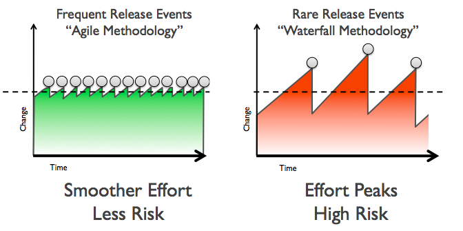

關於 DevOps
Table of Contents
1 什麼是 DevOps
根據維基百科的解釋， DevOps (*Dev*elopment 和 *Op*eration) 是一種重視軟件開發 人員和IT運維人員之間溝通合作的文化、運動或慣例。DevOps 的目標是支持業務最大限度 提高產品或服務的交付速度，核心是更快更高效地實現價值的交付。嚴格來說，DevOps 本 身並非目標而是實現目標的手段，因此，在推進 DevOps 的過程中，讓事情發生比如何發生 更重要（不奢求一下子就找到正確的方式，但能在摸索中擁抱變化並不斷調整）。
1.1 DevOps 的訴求
- 更小、更頻繁的變更──意味著更少的風險
- 讓開發人員更多地控制生產環境
- 更多地以應用程式為中心來理解基礎設施
- 定義簡潔明了的流程
- 儘可能地自動化
- 促成開發與運維的協同運作
1.2 對應用程式發佈的影響
在很多企業中，應用程式發布是一項涉及多個團隊、壓力很大、風險很高的活動。然而在具 備DevOps能力的組織中，應用程式發布的風險很低，原因如下：
- 減少變更範圍
- 與傳統的瀑布式開發模型相比，採用敏捷或疊代式開發意味著更頻繁的 發布、每次發布包含的變化更少。由於部署經常進行，因此每次部署不會對生 產系統造成巨大影響，應用程式會以平滑的速率逐漸生長。
- 加強發佈協調
- 通過交付通道和協同工具來確保所有相關人員（開發、運維、測試）理 解變更的內容並全力合作。
- 自動化
- 強大的部署自動化手段確保部署任務的可重複性、減少部署出錯的可能性。
- 針對類生產環境進行開發和測試
- 交付通道及自動化部署貫穿開發、測試、試運行及生 產等各個環境，讓運維問題在軟件交付的生命週期中提前出現，更靠近開 發，可以讓開發和運維人員都能夠盡早了解應用和系統的行為和性能， 並及早進行調整。

Figure 1: Agile vs Iterative
2 利用技術加速 DevOps
從技術的角度看，我們要看到基礎架構部署是交付通道中的最大瓶頸之一（這裡不僅僅指服 務器）。如果我們能將基礎架構部署作為一種 可編程、可重複 的模式，那麼就能加快部 署速度，並且通過技術讓人們可以專注於高價值的創造性工作，並讓實踐者們可以充分利 用並擴展他（她）們的時間與能力。本質上，OpenShift、SDN 或者其他雲服務方案，都是 在提供 基礎架構即代碼 的能力：將資源定義和配置作為代碼進行收集，並使用各種技術 來定義各種角色、關係、負載、配額及策略等，並且這些服務可以自助式地按需分配。